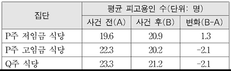

이중차분법
지문을 먼저 읽고, 이해가 막히는 문단에서 ‘그림으로 보기’를 누르세요. 그림은 문단을 따라 바뀝니다.
1문단경제학에서는 증거에 근거한 정책 논의를 위해 사건의 효과를 평가해야 할 경우가 많다. 어떤 사건의 효과를 평가한다는 것은 사건 후의 결과와 사건이 없었을 경우에 나타났을 결과를 비교하는 일이다. 그런데 가상의 결과는 관측할 수 없으므로 실제로는 사건을 경험한 표본들로 구성된 시행집단의 결과와, 사건을 경험하지 않은 표본들로 구성된 비교집단의 결과를 비교하여 사건의 효과를 평가한다. 따라서 이 작업의 관건은 그 사건 외에는 결과에 차이가 ⓐ날 이유가 없는 두 집단을 구성하는 일이다. 가령 어떤 사건이 임금에 미친 효과를 평가할 때, 그 사건이 없었다면 시행집단과 비교집단의 평균 임금이 같을 수밖에 없도록 두 집단을 구성하는 것이다. 이를 위해서는 두 집단에 표본이 임의로 배정되도록 사건을 설계하는 실험적 방법이 이상적이다. 그러나 사람을 표본으로 하거나 사회 문제를 다룰 때에는 이 방법을 적용할 수 없는 경우가 많다.
2문단이중차분법은 시행집단에서 일어난 변화에서 비교집단에서 일어난 변화를 뺀 값을 사건의 효과라고 평가하는 방법이다. 이는 사건이 없었더라도 비교집단에서 일어난 변화와 같은 크기의 변화가 시행집단에서도 일어났을 것이라는 평행추세 가정에 근거해 사건의 효과를 평가한 것이다. 이 가정이 충족되면 사건 전의 상태가 평균적으로 같도록 두 집단을 구성하지 않아도 된다.
3문단이중차분법은 1854년에 스노가 처음 사용했다고 알려져 있다. 그는 두 수도 회사로부터 물을 공급받는 런던의 동일 지역 주민들에 주목했다. 같은 수원을 사용하던 두 회사 중 한 회사만 수원을 ⓑ바꿨는데 주민들은 자신의 수원을 몰랐다. 스노는 수원이 바뀐 주민들과 바뀌지 않은 주민들의 수원 교체 전후 콜레라로 인한 사망률의 변화들을 비교함으로써 콜레라가 공기가 아닌 물을 통해 전염된다는 결론을 ⓒ내렸다. 경제학에서는 1910년대에 최저임금제 도입 효과를 파악하는 데 이 방법이 처음 이용되었다.
4문단평행추세 가정이 충족되지 않는 경우에 이중차분법을 적용하면 사건의 효과를 잘못 평가하게 된다. 예컨대 ㉠어떤 노동자 교육 프로그램의 고용 증가 효과를 평가할 때, 일자리가 급격히 줄어드는 산업에 종사하는 노동자의 비중이 비교집단에 비해 시행집단에서 더 큰 경우에는 평행추세 가정이 충족되지 않을 것이다. 그렇다고 해서 집단 간 표본의 통계적 유사성을 ⓓ높이려고 사건 이전 시기의 시행집단을 비교집단으로 설정하는 것이 평행추세 가정의 충족을 보장하는 것은 아니다. 예컨대 고용처럼 경기변동에 민감한 변화라면 집단 간 표본의 통계적 유사성보다 변화 발생의 동시성이 이 가정의 충족에서 더 중요할 수 있기 때문이다.
5문단여러 비교집단을 구성하여 각각에 이중차분법을 적용한 평가 결과가 같음을 확인하면 평행추세 가정이 충족된다는 신뢰를 줄 수 있다. 또한 시행집단과 여러 특성에서 표본의 통계적 유사성이 높은 비교집단을 구성하면 평행추세 가정이 위협받을 가능성을 ⓔ줄일 수 있다. 이러한 방법들을 통해 이중차분법을 적용한 평가에 대한 신뢰도를 높일 수 있다.
윗글을 바탕으로 <보기>를 이해한 내용으로 적절하지 않은 것은? [3점]
아래의 표는 S국가의 P주와 그에 인접한 Q주에 위치한 식당들을 1992년 1월 초와 12월 말에 조사한 결과의 일부이다. P주는 1992년 4월에 최저임금을 시간당 4달러에서 5달러로 올렸고, Q주는 1992년에 최저임금을 올리지 않았다. P주 저임금 식당들은, 최저임금 인상 전에 시간당 4달러의 임금을 지급했고 최저임금 인상 후에 임금이 상승했다. P주 고임금 식당들은, 최저임금 인상 전에 이미 시간당 5달러보다 더 높은 임금을 지급했고 최저임금 인상 후에도 임금이 상승하지 않았다. 이때 최저임금 인상에 따른 임금 상승이 고용에 미친 효과를 평가한다고 하자.
